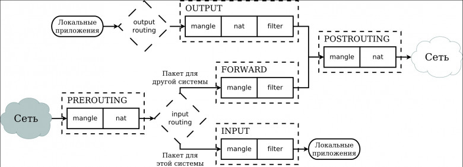
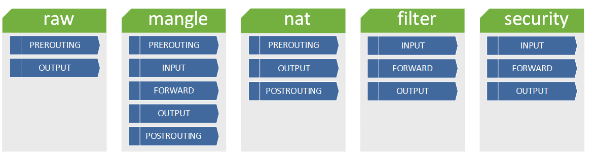
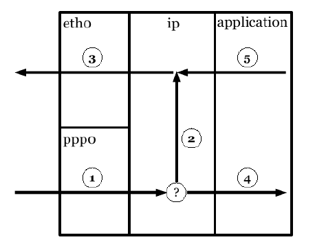

Если на компьютере имеется два сетевых адаптера, то цепочки правил удобно визуализировать следующим образом:

Соответственно, можно показать какие цепочки могут использоваться различными механизмами воздействия на пакеты:

Если на компьютере интерфейсы обозначены как ppp0 и ent0, то это можно еще визуализировать так:

На этой картинке цифрами обозначены следующие цепочки:
1 REROUTING
2 FORWARD
3 POSTROUTING
4 INPUT
5 OUTPUT